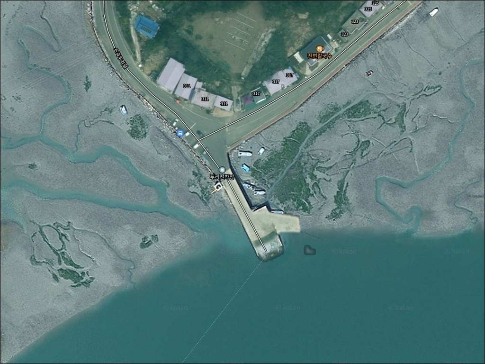
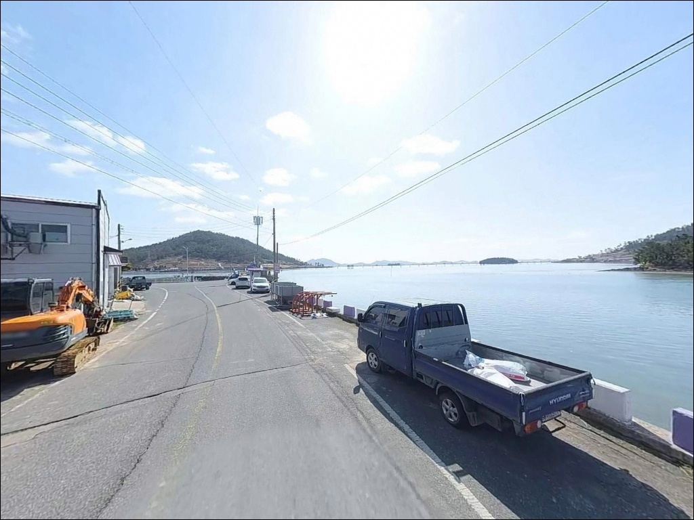
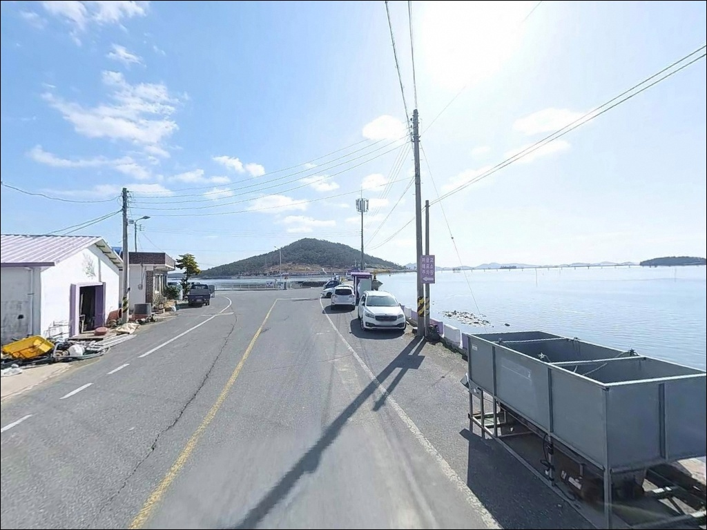
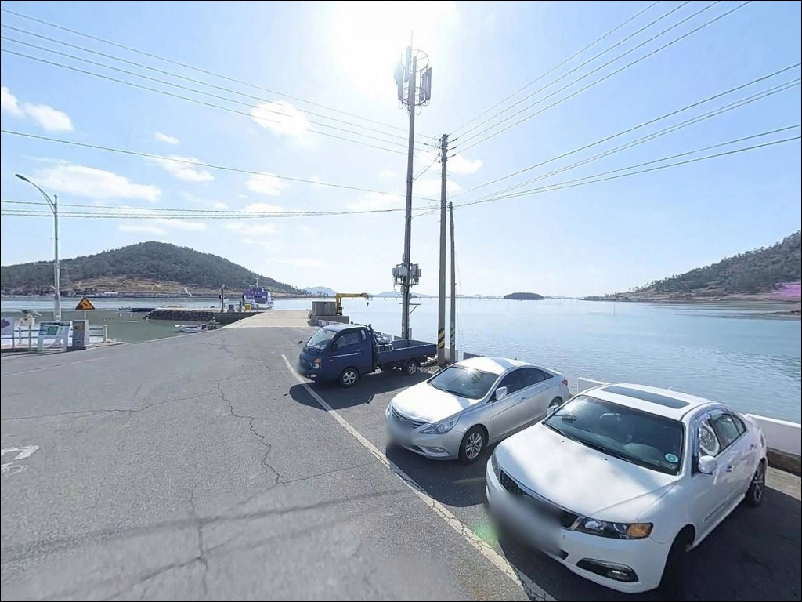
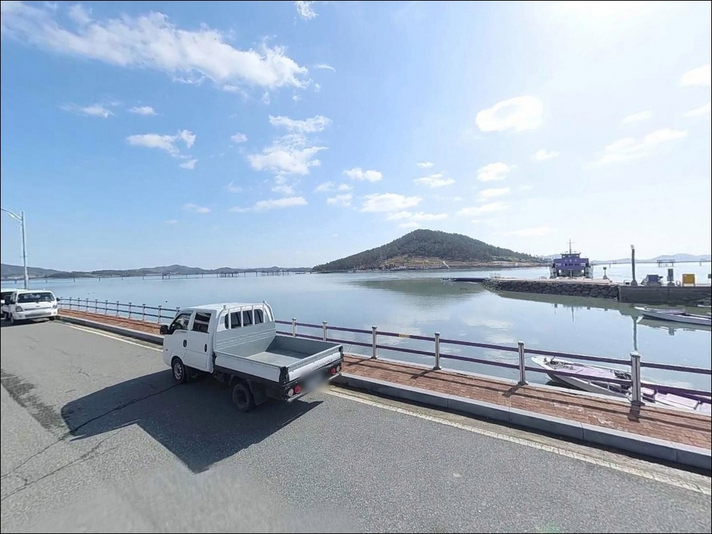
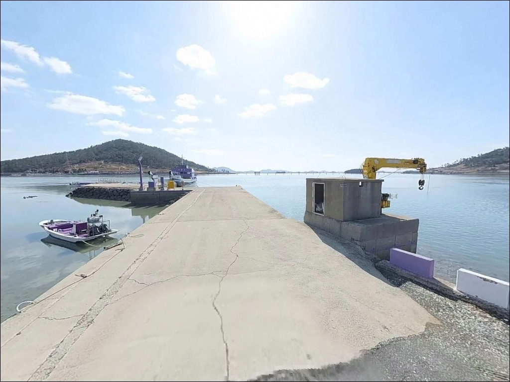
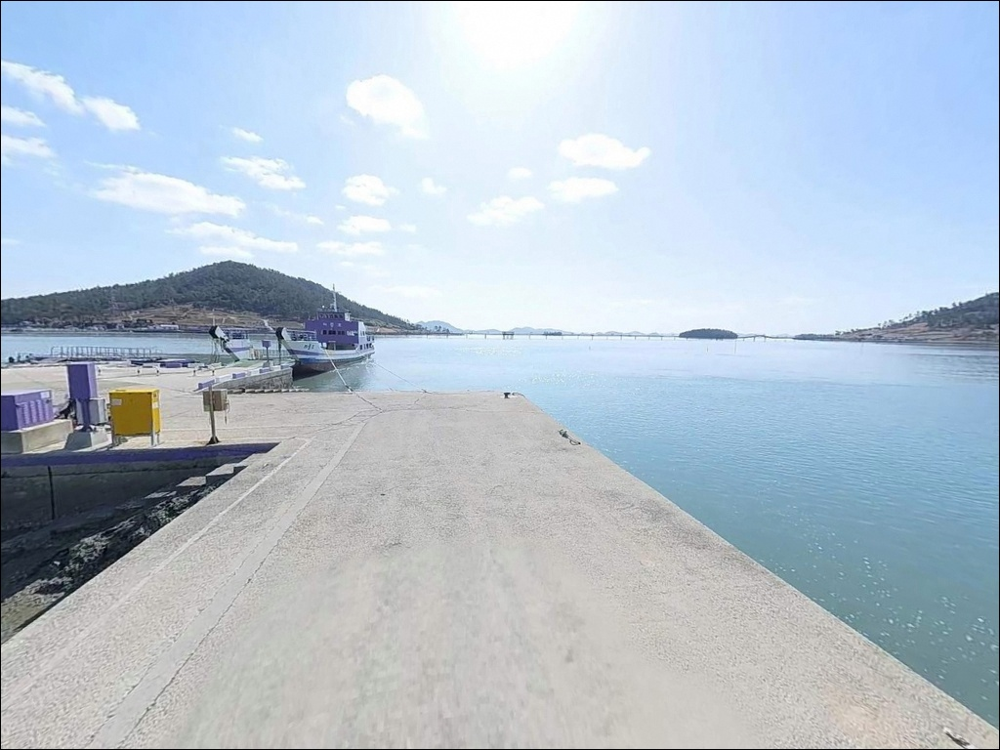
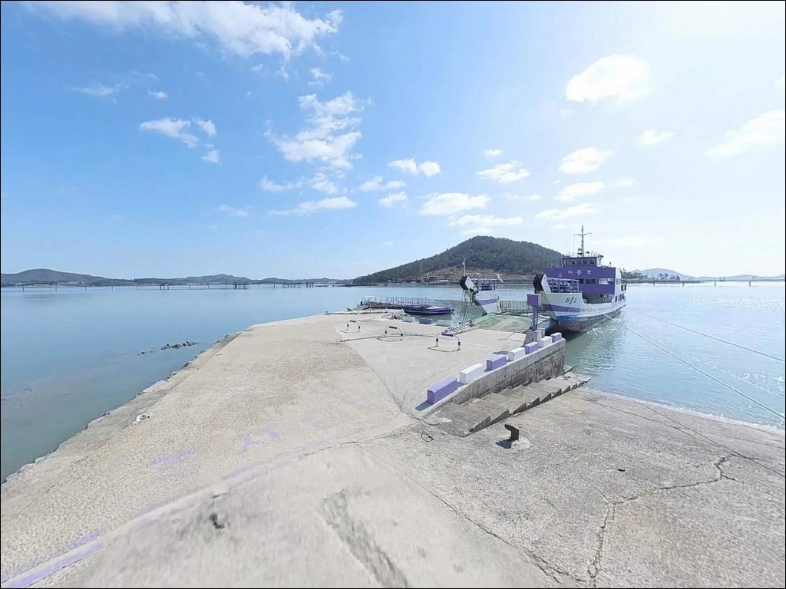
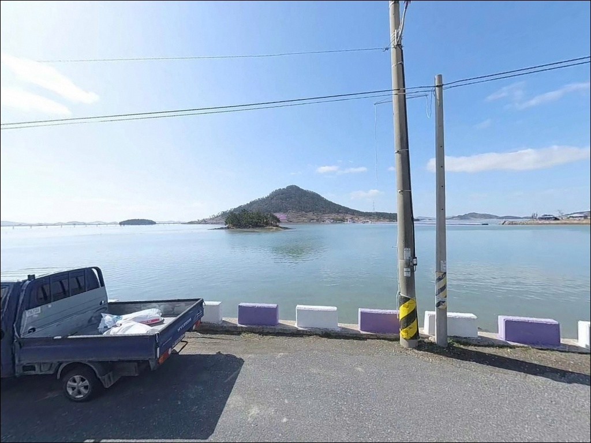

두리선착장, 전남 신안군 자연의 여백을 느낄 수 있는 차박, 낚시 명소
이 페이지에는 광고(제휴 링크 포함)가 있으며, 광고 링크를 통해 구매하면 운영자가 판매 수익 또는 수수료를 받을 수 있습니다. 포인트 사진: 카카오맵 스카이뷰·로드뷰. 이 페이지의 지도·사진 이미지는 카카오맵의 실제 서비스 이미지와 다를 수 있습니다.


포인트 안내
두리선착장
전남 신안군 안좌면 소곡리 709-7
물때 확인 없이 두리선착장을 찾으면
선착장 앞 갯벌만 보다가 돌아오는 결과를 만납니다.
안좌도 남단의 이 선착장은
서해 갯벌 지형의 특성상 간조 시 상당 구간 바닥이 드러나
낚시 자체가 불가능해지는 구조입니다.
진입 자체가 쉽다는 점이
이 포인트를 가볍게 보게 만드는 가장 흔한 실수입니다.
전남 신안군 안좌면 소곡리,
퍼플교 출발 지점에 자리한 두리선착장은
반월도와 박지도를 잇는 목조 다리 기점에서
가장 가까운 육상 선착장입니다.
낚시 전문 포인트로 알려진 곳은 아니지만
안좌도 남부 해안선의 갯골과 수로 지형이
원투낚시와 루어를 시험해볼 여지를 만들어주는
조용한 탐색형 포인트입니다.
이 글은 두리선착장의
지형 조건, 진입 환경, 물때 기반 낚시 가능성에 집중합니다.
조황 단정과 특정 어종 보장은
이 글의 범위에 포함되지 않습니다.

1. 진입 동선과 포인트 접근성
두리선착장으로 가는 길은
암태도·팔금도를 경유하는 천사대교 방면에서
안좌도 내 포장도로를 따라 진입합니다.
퍼플섬 관광지 개발과 함께 도로 정비가 이루어진 곳으로,
선착장까지 이어지는 소곡두리길은
비포장 구간 없이 포장 상태가 양호한 편입니다.
급경사 구간도 없어 소형 차량부터 중형 SUV까지
진입에 별다른 어려움이 없습니다.
선착장 인접에 퍼플섬 공영주차장이 위치해 있어
주차 여건은 관광지 수준으로 갖춰진 편입니다.
주차장 규모상 회차도 가능하며,
화장실도 인근에서 확인됩니다.
다만 주말과 성수기에는 관광 차량이 집중되므로
평일 또는 이른 아침 진입이 주차 여건을 안정적으로 확보하는
현실적인 방법입니다.
선착장 주변 낚시 자리 후보는
콘크리트 선착장 끝단과
퍼플교 인근 수로 방향 구간입니다.
갯벌 지형상 물때에 따라 진입 가능 구간이 달라지므로
입장 전에 조류 상황을 먼저 파악하는 것이
자리 확보의 기본 조건입니다.

2. 차박 환경과 야간 체류 여건
두리선착장 일대는 퍼플섬 관광 거점 인근인 만큼
선착장 주변 매표소 구간에 조명 시설이 갖춰져 있습니다.
야간에 완전한 암흑 환경은 아니어서
낚시 목적 야간 체류에는 방향 파악에 유리하지만,
관광 인프라 구간 특성상 프라이버시는 제한적입니다.
주말 낮에는 관광객이 집중되는 구간이라
차박을 메인으로 삼기에는 부담이 있습니다.
주중 야간이라면 관광 인파가 줄어
비교적 조용한 체류가 가능한 편이며,
퍼플교 인근 수로 쪽은
서풍이 강해지는 날 파도 영향을
기상 예보로 미리 확인해야 하는 방향입니다.
관광 공영주차장에서의 야간 주박 가능 여부는
현장 안내판을 통해 먼저 확인해야 합니다.
주차장 이용 제한 안내가 없는 경우에 한해
차 안 취침이 가능한 구조로 볼 수 있으며,
취사는 관광지 인접 구간이므로
주변 환경에 맞게 판단하는 것이 기본 매너입니다.


3. 주변 편의시설 및 인프라 현황
퍼플교 매표소 인근에 카페 시설이 자리해 있고,
선착장 일대에 화장실이 갖춰진 것으로 확인됩니다.
전기차 충전기(급속·완속)도 설치된 것으로 확인되어
전기차 차박 여행자에게도
접근 가능한 시설 조건을 갖춘 포인트입니다.
식당은 소곡두리길 인근에서
바지락·낙지 칼국수류 현지 식당이 확인됩니다.
마트와 편의점 등 생활 인프라는
안좌면사무소 방향으로 이동해야 이용 가능합니다.
출조 전 보급은 안좌면 중심지에서 마치는 것이
현실적인 준비 방식입니다.
주유소는 안좌도 내에 위치가 확인되므로
연료 보급 동선은 출발 전에
미리 파악해 두는 편이 좋습니다.
반경 3km 이내 편의점은
기대하기 어려운 구조여서
식수·얼음·낚시 소품은 출발 전에 갖춰야 합니다.

4. 갯벌형 포인트에서 낚시 가능 시간대를 결정하는 기준
두리선착장 방문 전 가장 먼저 확인할 것은
물때입니다.
서해 갯벌 지형의 특성상
간조 시에는 선착장 주변 갯벌이 상당 구간 노출되어
채비를 던질 수 있는 수면 자체가 줄어듭니다.
바다타임에서 안좌도 기준 물때를 확인하고
만조 전후 2~3시간을 낚시 가능 시간대로
잡는 것이 현실적인 계획입니다.
이 일대는 갯골 안전 안내판이 설치된 지역입니다.
밀물이 진행되면 갯골 경계가 빠르게 변하는 구조로,
갯벌 위 이동은 물이 차오르는 상황에서
즉시 후퇴 판단이 가능한 조건에서만
허용되는 행동입니다.
야간 낚시 시에는 헤드랜턴과 구명조끼를
반드시 챙겨야 합니다.
퍼플교 위 낚시 시도는
구조물 손상과 안전 문제로 금지된 구간입니다.
선착장 접안 구역도 어선 이동 동선을
방해하지 않는 자리에서만 낚시가 가능합니다.
기상은 출조 당일 아침에
기상청 예보를 다시 확인하고,
서풍이 강한 날은
파도 영향을 사전에 점검하는 것이 기본 준비입니다.

5. 지형 기반 낚시 여건 분석
두리선착장은 안좌도 남단에서
퍼플교로 이어지는 수로를 옆에 두고 있습니다.
선착장 주변은 갯벌 지형이 광범위하게 형성되어 있고,
선착장 끝단과 퍼플교 인근 수로 입구 구간에서
비교적 수심이 유지되는 급심 구간이 형성됩니다.
이 구간이 이 포인트에서 탐색 우선 순위에 올라오는 자리입니다.
섬과 섬 사이 수로 지형의 특성상
물때에 따라 조류 흐름이 생기는 구간이 형성됩니다.
팔금도 방향 좁은 수로와 인접한 구조여서
조류가 살아 있는 시간대에는
수로 방향으로 채비를 보내는 방식이 유효합니다.
수로 조류 흐름이 약한 정조 타이밍에는
반응이 줄어드는 구조입니다.
바닥은 갯벌·모래 혼합 지형으로 추정되며
밑걸림 위험은 낮은 편입니다.
아직 낚시 전문 포인트로 알려지지 않은 곳인 만큼
어느 자리가 조과에 유리한지는
직접 탐색해봐야 알 수 있는 구조입니다.
출조 전 안좌도 일대 낚시 조황은 꼭 검색해 보시기 바랍니다.


6. 포인트에 어울리는 낚시 스타일
두리선착장 지형에서 가장 현실적인 방식은
원투낚시입니다.
갯벌·모래 혼합 바닥과 만조 시 확보되는 수심을 고려하면
채비를 멀리 던진 뒤 수로 방향으로 끌어오는 전략이
이 포인트 구조에 맞습니다.
안좌도 일대 서해 연안 갯벌형 지형에서
망둥어와 붕장어가 바닥층 기대 어종으로 꼽히는
지역 특성과 일치하는 방식입니다.
루어낚시도 시도해볼 여지가 있습니다.
퍼플교 인근 수로 입구와 선착장 끝단은
조류 흐름이 생기는 구간으로,
농어를 노리는 미노우 계열 루어를
수로 방향으로 캐스팅하는 방식이 지형 조건에 어울립니다.
안좌도 연안 해역에서
농어와 숭어가 기대 어종으로 거론되는 지역 특성을
고려한 접근입니다.
찌낚시는 이 포인트에서 효율이 제한되는 편입니다.
외해 노출이 적고 내만형 구조에 가까워
찌낚시가 힘을 발휘하기에는
지형 조건이 맞지 않습니다.
감성돔을 메인으로 노린다면
외항 구조를 갖춘 읍동리 방파제 등
인근 포인트를 먼저 확인하는 편이 좋습니다.

7. 대안 포인트와 플랜 B 동선
두리선착장에서 낚시 여건이 여의치 않다면
가장 먼저 이동할 곳은
안좌도 북동쪽의 읍동리 방파제입니다.
외항 구조를 갖추고 수심이 안정적인 편으로,
감성돔과 다양한 어종을 기대할 수 있는
안좌도 내 대표 낚시 포인트입니다.
두리선착장 대비 낚시 효율이 안정적인 구조입니다.
안좌도 남단의 복호항도 대안으로 고려할 수 있습니다.
두리선착장보다 수심 확보가 용이한 구조여서
원투나 루어 탐색에 적합한 환경입니다.
퍼플교를 건너면 반월도 선착장과 박지도 방파제로
이어지는 동선도 있어,
안좌도 남부 포인트를 순서대로 탐색하는 루트로
묶어볼 수 있습니다.
차박 대안으로는 자은도 방향 이동이 가능합니다.
분계해변과 백길해변은
차박 관련 후기가 다수 형성된 곳으로,
두리선착장보다 프라이버시 확보 여건이
나은 편입니다.

아직 덜 알려진 안좌도 남단,
물때만 맞추면 시도해볼 가치가 있습니다
두리선착장은 본격 낚시 포인트로서보다
아직 알려지지 않은 탐색형 서브 포인트에 가깝습니다.
원투와 루어를 가볍게 던져보며
안좌도 남부 수로 지형을 직접 확인하는 출조로
접근하는 것이 이 포인트에 맞는 방식입니다.
물때를 맞추지 않으면 낚시 자체가 불가능해지고,
주말 성수기에는 관광객 혼잡으로
낚시 자리 확보도 어려워집니다.
만조 타이밍 + 평일 진입, 이 두 가지를 함께 갖추면
조용한 서해 연안 포인트로서의 가능성을
충분히 시험해볼 수 있습니다.
퍼플섬 관광과 연계하는 가족 동반 출조나
안좌도를 처음 탐색하는 여정이라면,
낚시와 차박을 함께 엮어볼 수 있는 거점으로
기억해 두기에 나쁘지 않은 포인트입니다.